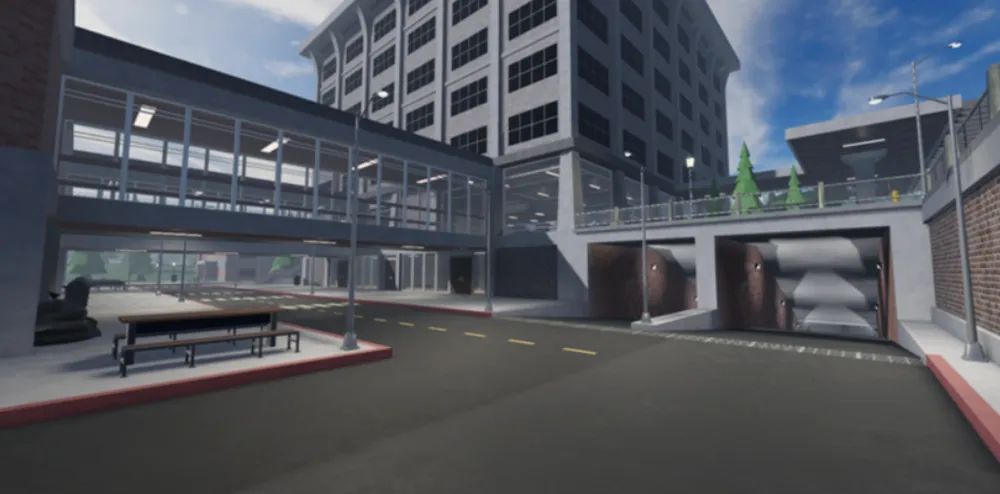

Evege

Evade também é um jogo de terror dentro de Roblox, similar ao Cheese Escape,
mas com um tom de horror ainda maior. Os labirintos são escuros, quase sem luz,
e o jogador pode ser perseguido por vários inimigos ao mesmo tempo.
Página anterior
Próxima página
Voltar para a página principal